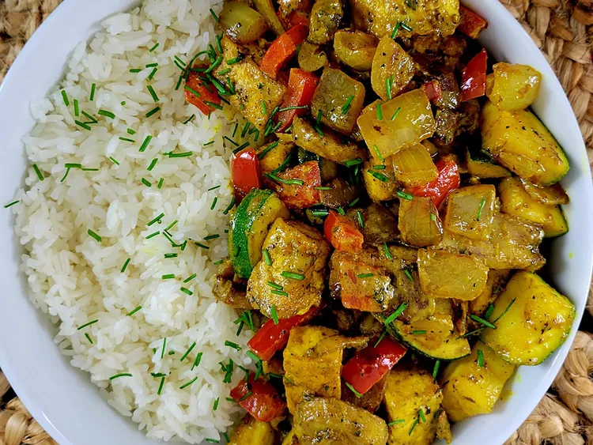

Jamaican Curry

Description
This vegan Jamaican curry dish is full of earthy goodness. The sautéed tofu combined with the boldness from the curry and creaminess from the coconut makes this dish a must try! Serve over rice.
Ingredients
- 2 tablespoons grapeseed oil
- 1 (14 ounce) package tofu, cut into bite-sized cubes
- 1 yellow onion, chopped
- 1 red bell pepper, chopped
- 2 to 3 tablespoons Jamaican yellow curry powder, divided
- 1 small zucchini, cut into bite-sized pieces
- 1/2 cup sliced cremini mushrooms or baby bellas
- 1/4 cup coconut milk
- salt and freshly ground black pepper to taste
Steps
- Heat grapeseed oil in a cast iron skillet over medium-high heat. Pat excess water from tofu with a paper towel, and fry tofu in the hot skillet until browned around the edges, about 4 minutes per side. Remove from skillet and set aside.
- Add onions, bell peppers, and 1 tablespoon curry powder to the skillet and sauté for 2 minutes. Add zucchini and mushrooms to the skillet; sauté for 3 minutes.
- Return tofu to the skillet, add 1 tablespoon curry powder, or more to taste, and mix well. Pour in coconut milk, stir well. Reduce heat to low, cover, and let simmer for 3 to 5 minutes. Season with salt and pepper.